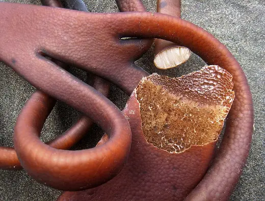

Rimurapa · Bull kelp
Rimurapa · Bull kelp is a wild green you can forage all year round in Wellington and Manawatū, Canterbury, Otago and Southland, West Coast and Top of the South. Massive, leathery bull kelp thrashing on exposed rocky coasts; honeycombed blades were split to make pōhā bags for storing tītī.

When is rimurapa · bull kelp in season in New Zealand?
Rimurapa · Bull kelp is usually in season all year round. Timing shifts with weather, latitude and altitude.
Where does rimurapa · bull kelp grow in New Zealand?
Rimurapa · Bull kelp grows in Canterbury, Manawatū-Whanganui, Marlborough, Nelson, Otago, Southland, Taranaki, Tasman, Wellington, West Coast. Regions: Wellington and Manawatū, Canterbury, Otago and Southland, West Coast, Top of the South.
How do you recognise rimurapa · bull kelp?
Massive, leathery bull kelp thrashing on exposed rocky coasts; honeycombed blades were split to make pōhā bags for storing tītī.
How do you harvest rimurapa · bull kelp?
Pinch off young tips and top leaves before the plant flowers, when they are tender and mild. Leave the roots and lower leaves so it regrows. Pick away from roads, sprayed verges and dog-walking paths.
How do you eat rimurapa · bull kelp?
Thin young blades dried and fried as chips, or soaked and simmered in stews.
How do you store rimurapa · bull kelp?
Dry.
What is rimurapa · bull kelp good for?
Iron & calcium.